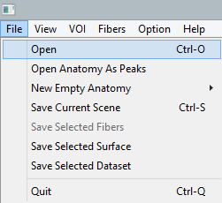

For this tutorial, you will need to download this example dataset. (You can also look at this other video tutorial)
First, let's open the following anatomical images: T1.nii.gz, FA.nii.gz, Cortex.nii.gz and Mask.nii.gz.
The scene should display something like this (tip: Hit the "S" key for a perfect superior view).

You can move the order of the anatomies by using the up and down arrow buttons located in the Properties panel. Double click on the eyes icon next to each anatomy to quickly show/hide it. In another tutorial, we will show how to generate volumes and change colormaps to achieve such visualization:
Ok, now let's dive into real-time tractography. First step will be to load the Peaks.nii.gz (The Fibernavigator supports 3 or 5 peaks per voxel). However, we highly recommend to hide turn OFF slice display (e.g. let's say Axial and Sagittal using the top left icons). You should now have a scene with peaks at every voxel (some of them might intersect with the anatomies. For closer inspection, just hide the anatomies using the eyes icons, as mentioned earlier. Position your crosshair approximately in the body of the corpus callosum. (Note: you can scale the peaks in their Properties panel).
Now, click on the HARDI tracking panel, located right next of the Properties panel. A multitude of tracking options now awaits you. We will first select the 2 major datasets needed in order to perform real-time tractography. To do so, click once on the Peaks.nii.gz in the left list, and then click on the red button "Peaks not selected". The peaks should now automatically disappear and a tiny purple box should now appear in the scene (exactly were the 3 planes were intersecting). Repeat the same for the tracking mask by selecting the FA.nii.gz (you can use the White matter and Cortex masks upon completion of this tutorial). A final click on the "Start tracking" button should now start real-time tractography.
Feel free to right click on the box and drag it around. At first, it might be challenging to find the box because of overlapping streamlines. A tip here is to decrease the opacity of the streamlines (use the opacity slider). You now have access to a multitude of parameters to be tuned interactively, while seeing the effect on the tract of interest. Here is a brief description for each option:
Play around with the tool, many combination are possible (use the drawer tool to draw an inclusion/exclusion region, or even use it as a seed region. Try changing the seed-ROI dimensions to fit your needs (Hold Ctrl+Right click on the side of the ROI), switch between randomly and evenly spaced seeds, etc. Exploring these possibilities is a key-factor when performing tractography. If you are using an FA mask, try decreasing the threshold from 0.2 to 0.1 and observe the effect on the current tract.
Once you are satisfied with the current tract, hit the Export fibers to scene object button. This will generate a static set of streamlines in the left menu list. From there on, many properties are available such as subsampling and coloring options. Also keep in mind that further dissection can be perform using and / not boxes (e.g. in the case where spurious streamlines were spanned using real-time tractography). If you want to save your streamlines on your computer, select the appropriate dataset from the list, then go to "File/Save selected fibers". The default file format is .VTK (binary). If you re-open your streamlines, don't be surprised to see that they are not aligned with the current anatomies. This is because they now reside in World Space. A simple click on the "Fit to Anatomy" button will repositionate them appropriately.
Note: The windows version is compiled as a 32-bit project. Memory problems can occur while performing whole-brain real-time tractography (i.e. using WM mask as seed region, for example). Linux and MAC version are better suited. Moreover, for ultimate performances, we highly recommend to hide peaks datasets (or turn slice display off) when navigating.